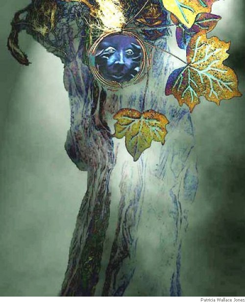

Mark Allinson
Translations from Homer, Ovid, and Rilke
The House of Rumour
(A Translation from Book XII of Ovid’s Metamorphoses)
There in the centre of the world where the earth meets the ocean and heavens,
is a place from which everything, anywhere it happens, may be seen or listened to,
no matter how distant or hidden — and here lies the house of Rumour.
Rumour herself built her home on a hilltop, and twenty-four seven
the countless windows and portals she gave it lie open and listening.
Echoing brass is the substance she made it from, ringing with the repeated
sounds it gathers and returns. Within is no peace of silence,
nor is there din, but merely the murmuring whispers like sea-waves
sighing from a distance, or the last faint lingering echoes of thunder
when Jupiter crashes the dark clouds together. A host inhabits
these sibilant hallways, coming and going in shadowy gatherings,
and a thousand rumours of false mixed with true here mingle confusedly.
Some of them fill the ears of the idle, while others convey
tales they collect which expand in the telling, gathering details.
Here lives Credulity and passionate Error together with Joyfulness
based upon nothing. And here lives Fear and new-born Sedition
and the Whispers whose origins no one can account for. And Rumour herself
who sees and hears everything, and seeks information, from all over the world.
In Circe’s Palace
(A Translation from Homer’s The Odyssey, Book X, ll. 207-244)
Drawing of lots sent the brave Eurylochus with twenty-two comrades
deep into the forested vales where they stumbled on Circe’s palace,
massive in sculpted stone on a clearing where the land rose gently.
Mountain lions and wolves were roaming there, under her power,
fawning on the men instead of devouring them, pawing them, dogging them,
as if they came carrying scraps from a banquet to calm their wild energy.
Pausing at her doors, the cringing men and these beasts stood wondering,
listening in rapture to Circe singing as she plied her shuttle.
Her immortal loom’s beguiling web is the glory of this goddess;
and only a goddess can weave with such glittering threads as hers.
Taking command now, Polites, a captain, and my dearest in devotion,
said to the men, “my friends, I hear someone within is singing
while plying on her loom, and the sound of her singing is quite enthralling;
hear how the house is echoing now to her gorgeous music;
whether goddess or woman, I say we should begin calling out to her.”
Hailing her stridently, all the men shouted and called to her, called to her.
Opening her shining doors at once, she emerged, inviting them;
and they all so innocently entered her palace without hesitation.
Only Eurylochus was feeling uneasily about this adventure.
Once she had seated them, she began mixing a marvellous potion,
made out of barley and cheeses and blended with sweet mulled honey
in Pramnian wine. But into this brew she added some mischief:
drugs to obliterate all recollection of loved ones and homeland.
Once they had drunken enough of this potion, she switched them to the pigsty,
using her wand like a willow to flail them till they bristled into porkers,
snorting, wheezing and grovelling with their snouts all the way to the sty.
Minds as strong as before but useless in the grunt of an animal.
As they sobbed in their pig-pens, Circe tossed their nuts in the mud.
Nausicaa’s Epiphany
(A Translation from Homer’s The Odyssey, Book VI, ll. 224-249)
Mighty Odysseus bathed in the river, washing his body,
sluicing the sea-brine coating his back and his broad shoulders,
scrubbing away the dandruff of salt-crust scaling his head.
Once he had bathed, and was glistening with oil, he put on the clothing
the princess had given him, while divine Athena enhanced his appearance,
making him seem taller, more muscled and powerful, and down from his forehead
running his curls in ringlets like clusters of hyacinth blossom.
Masterly as an artisan pouring gold upon silver (and one whom Hepaestus
and Athena had tutored in skilful technique), as he perfects his creation,
Athena now lavished such glory on Odysseus’ head and shoulders.
Walking to the shore, he sat there, alone, shimmering with glamour;
and the breath-taken princess stood and stared at him, lost in wonder.
Turning to her handmaids with the long-braided-hair, she spoke to them, saying:
“Listen to me now, my girls with white arms, the gods on Olympus
surely are not all against this man who visits among us.
Shameful and crude, at first he seemed, but now I confess
that if only a man like this were my husband, and stayed on forever!
Just be certain, my girls, the man has plenty to eat and to drink.”
They listened attentively, and hurried away to do her bidding,
bringing Odysseus food and drink; and he feasted greedily;
god-like Odysseus, so hungry, so long since he tasted meat...
From Rilke’s Sonnets to Orpheus
(II.12)
Desire transformation, love the flame,
the thing you miss in Change’s proud display.
The shaping spirit, ruling the mundane,
adores the turn, like dawn returning day.
When baked and sealed to last, do pots of clay
really feel secure to be dried and grey?
But the hard calls to hardest, and we know
somewhere a hammer rises for the blow.
Give yourself away, like a bubbling spring,
then Knowing knows and leads you in the dance
which ends so often where it will begin;
each parting breeds a space for blissful trance.
And Daphne, since the girl feels like a tree,
wants you to be a breeze, and feel free. 
Mark Allinson was born in Melbourne, Australia, in 1947, and, miraculously, is still alive at the time this bio is being written, over sixty years later. However, by the time you read this, who knows. In fact, at this moment there is a massive thunderstorm bearing down on the shuddering plywood shed he inhabits on the south coast of New South Wales. Mark has published a few poems in various places, but he forgets where, just for the moment. But a few of them are on this site, in past issues. He was going to tell you a bit more about himself, but the wind is getting so strong, and the – oh, shit! What was tha
|